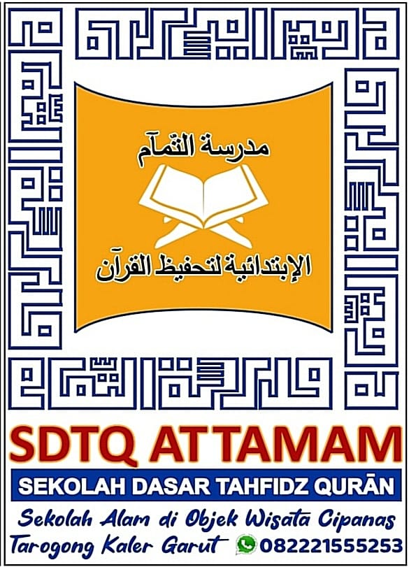

Kisah Wali Murid
"Saya takut anak saya pintar tapi tak punya adab. Saya takut dia sukses, tapi kosong jiwanya."
"Saya ini bukan orang yang tinggi ilmunya. Tapi saya tahu betul, dunia ini makin hari makin gaduh. Karena itu saya cari sekolah yang pertama-tama ngajarin dia jadi manusia yang tahu arah—bukan cuma yang bisa baca tulis hitung. Di Attamam, anak-anak diajarin wudhu yang benar, adab ke guru, cara minta maaf, hingga cara duduk waktu belajar."
